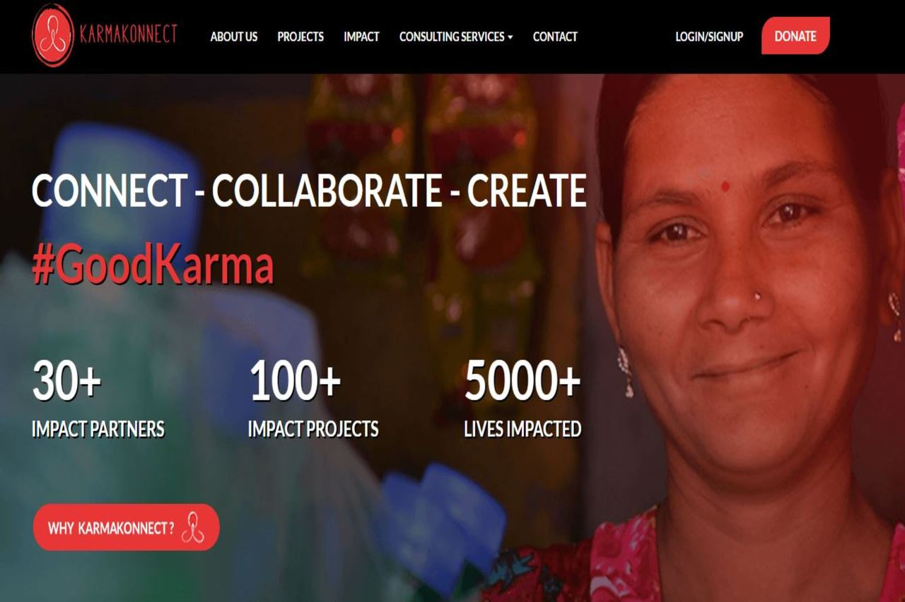
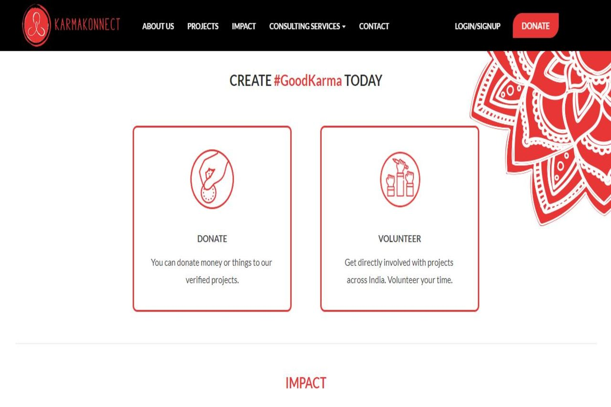
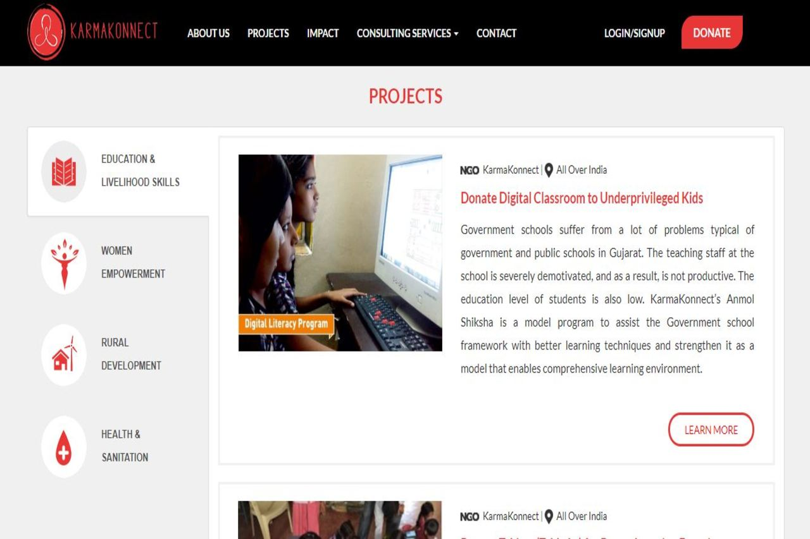
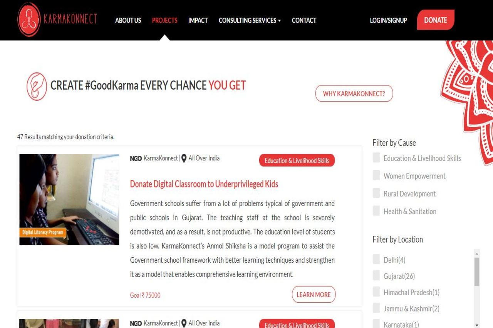
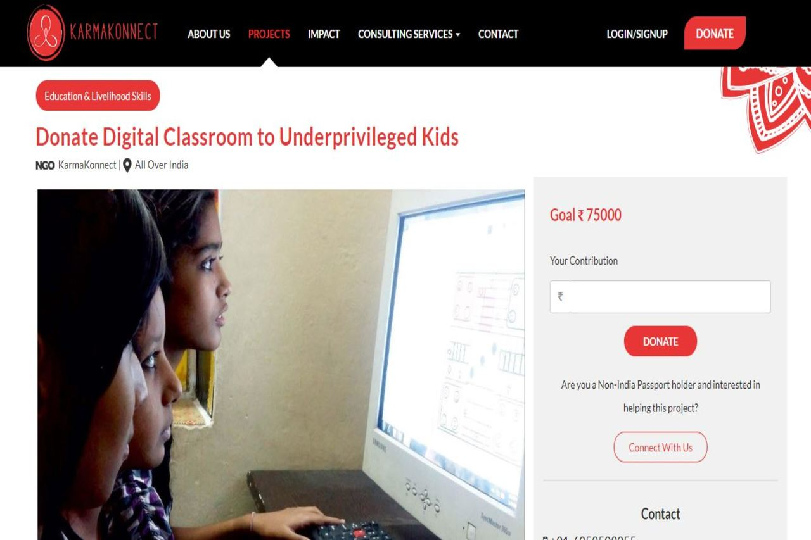

KarmaKonnect





Description
Re-developed a non-responsive page that used Flash into a brand new responsive mobile friendly website.
I was the lead Front End Developer for this project and worked closely with the design team to successfully build a custom mobile responsive portfolio and blog made for non-profit social organization mades with PHP and Laravel.